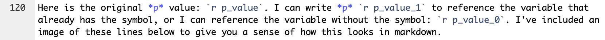

Chapter 5 Content
- Markdown overview
- Special characters
- Inline R
5.1 Markdown overview
R Markdown: The Definitive Guide and this R Markdown cheatsheet provide information on the typesetting capabilities of R Markdown. In general, R Markdown typesetting options include *italics*, **bold**, and ~~strike-through~~. These are achieved by wrapping text in a certain number of asterisks or tildes. There are also (parentheses), [square brackets], and "quotation marks" that can have special functions in markdown, like creating hyperlinks: [text](link).
With many of these typesetting characters, if you highlight the text you want to format (by clicking and dragging your cursor), you can just hit the character once to wrap the text automatically. This way, you don’t have to go to the beginning and end of the text and place the characters individually.
Another note about R Markdown is that line spacing matters. For example, if I wanted to include bullet points after this sentence, they wouldn’t render properly if I didn’t hit enter twice before starting them. In other words, I need to have a full line of white space before bullet points and numbered lists. If you’re having issues with your document rendering correctly, make sure you have line breaks between lists, paragraphs, and headers.
5.2 Special characters
If you want any special characters in R Markdown, \(\LaTeX\), or pandoc to appear as text, rather than having them perform some function, you need to “escape” them with a backslash. For example, pound signs/hashtags, backslashes, and dollar signs need to be preceded by a backslash.
This also applies to any chunk outputs that contain strings, as with knitr::kable tables with \(\LaTeX\) functions or characters (e.g., Greek letters like \(\eta\) to report partial eta-squared or functions like \textit{p} to italicize the text). Sometimes you even need multiple backslashes, so you may have to play around to troubleshoot if they’re not rendering correctly.
Speaking of \(\LaTeX\), you can engage “math-mode” by putting dollar signs around \(\LaTeX\) math commands. This way, you can include equations, International Phonetic Alphabet (IPA) symbols, and the like in R Markdown (even if you’re not outputting to a PDF). For example, I can write \(e = mc^2\) in a sentence like this just by wrapping the equation in a single set of dollar signs, or I can use two sets to center the equation: \[e = mc^2\]
5.3 Inline R
A very useful aspect of R Markdown is that you can call R objects and functions in markdown or the YAML header by sandwiching them between backticks. For example, let’s say I want to report on the names of the flower species in the iris dataset.
# Pull species column from iris and get unique values in column
species <- iris %>% pull(Species) %>% unique()
# Print species variable
print(species)## [1] setosa versicolor virginica
## Levels: setosa versicolor virginicaMaybe I also want to save a variable with the number of species in this list.
# Get number of unique species
species_count <- length(species)
# Print number of species
print(species_count)## [1] 3I can call species and species_count in the markdown text to reference these variables dynamically. Just as in a code chunk, I have to specify that I’m working with R code by including a lower-case r in the backticks with the variable.
So if I put “r species_count” between backticks, I can report that there are 3 species without typing out the number itself. Or I can reference the variable with the exact species names: setosa, versicolor, virginica. You can see what the markdown looks like in the screenshot below.
5.4 Custom functions
If you’re fairly comfortable with R, you can write formatting functions for yourself to make your life easier when you’re referencing variables in your text.
When I was working on my Master’s thesis, I wrote some custom functions for statistical values that I had to report over and over. This was particularly useful when I had to switch from referring to any p values over .05 as p > .05 to p = the exact value. I just had to change the one function by commenting out a couple lines and re-knit my document. The function is included below; this was the most complicated of the ones I wrote, which included degrees of freedom, t and F values, reaction times, and percentages.
# Make number formatting function for p values
# val is the p value I want to format
# format_code specifies whether I want to include the symbol or not
# format_code defaults to including the symbol
p_formatting <- function(val, format_code = 1) {
# If I want to include the symbol (when I'm calling this variable in text)
if (format_code == 1) {
# If the p value is less than .001, get the less than symbol
# Otherwise, get the equals symbol
# The next line, which I commented out for my thesis,
# looks to see if the value was greater than .05
sign_type <- if_else(val < 0.001, "<", "=")
sign_type <- if_else(val > 0.05, ">", sign_type)
# If the p value is less than .001, set the value equal to .001
if (sign_type == "<") {
val <- ".001"
# If the p value is greater than .05, set the value equal to .05
# I commented out these next two lines for my thesis
} else if (sign_type == ">") {
val <- ".05"
# Otherwise, get the actual p value,
# round it to three decimal places, and
# remove the leading zero
} else {
val <- sprintf("%.3f", val)
val <- substring(val, 2)
}
# Combine the new/formatted p value with >, <, or =,
# depending on the p value
val_string <- paste(sign_type, val, sep = " ")
val_string
# If I don't want the symbol (as in a table),
# just round the value to three decimal places
# and remove the leading zero
} else if (format_code == 0) {
val <- sprintf("%.3f", val)
val_string <- substring(val, 2)
val_string
}
}I’ve included an example with this function below to demonstrate how you can really streamline your analysis-to-presentation pipeline with a simple function.
# Create arbitrary p value
p_value <- 0.0123
# Format p value including symbol
p_value_1 <- p_formatting(p_value)
# Format p value not including symbol
p_value_0 <- p_formatting(p_value, format_code = 0)Here is the original p value: 0.0123. I can write p = .012 to reference the variable that already has the symbol, or I can reference the variable without the symbol: .012. I’ve included an image of these lines below to give you a sense of how this looks in markdown.
